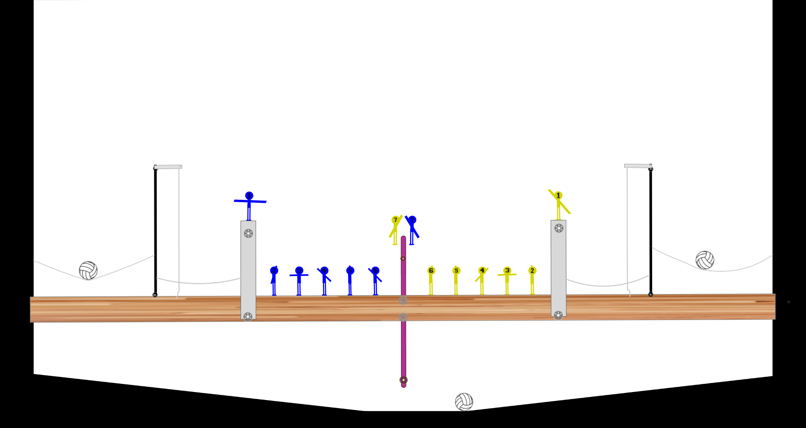

About
Stick Volley is an online simulation sport where 8 teams compete to try and win the championship. There are two goals on opposite ends of the court. Each team consists of one goalie, one attcker, and five defenders each having their own purpose on the team.
The goalie is the quarter back of Stick Volley, they control their defense and defend the goal from any shots. The attacker is the superstar scorer for a Stick Volley team. They score the most goals and are one of the most important positions in Stick Volley.
Defender 2 is the first defender on defense and they're closests to the goalie's wall. D2 is arguably one of if not the most important positon of the five defenders since they have to have great communication with their goalie. Next to the D2 is the defender
three, this is another important defender since they can score a lot of goals, but they can also make many mistakes and score a lot of own goals. After the D3 is the defender 4, similar to the defender 3 the D4's role is to just try and score as many goals
from the attacker's mistakes. But a D4 needs to control any balls that are hit high in the air since they most likely will hit them. After the D4 is the defender 5. This position's job is to make sure the ball gets to the defender 6 safely without hitting the
ball up at the attacker. And finally next to the defender 5 and under the opposite team's attacker is the defender 6. This arguably one of if not the least important position in Stick Volley since all they have to do is turn the ball over. Each match starts with
a faceoff between the two attackers and ends with the first team to score three goals. Stick Volley is a basic sport, but is very detailed when it comes to strategy and management.
